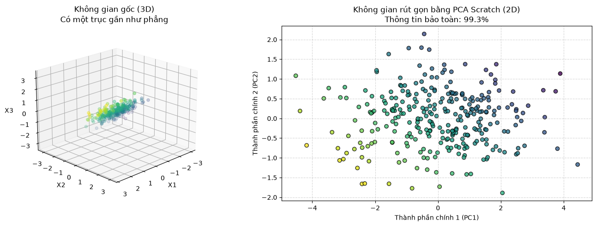

Phân tích Thành phần Chính (PCA) & Phân rã Giá trị Đặc dị (SVD)#
Mục tiêu của PCA là chiếu (project) dữ liệu từ không gian nhiều chiều (\(D\)) xuống một không gian ít chiều hơn (\(K\)) sao cho bảo toàn được nhiều phương sai (thông tin) nhất có thể.
1. Ma trận Hiệp phương sai (Covariance Matrix): Đầu tiên, dữ liệu \(X\) bắt buộc phải được chuẩn hóa về tâm \(0\) (Mean Centering). Ma trận hiệp phương sai \(\Sigma\) kích thước \(D \times D\) đo lường sự biến thiên cùng nhau giữa các cặp đặc trưng: $\(\Sigma = \frac{1}{N-1} X^T X\)$
2. Trị riêng (Eigenvalues) và Vector riêng (Eigenvectors): Giải phương trình đặc trưng của ma trận \(\Sigma\): $\(\Sigma v = \lambda v\)$
Vector riêng (\(v\)): Chỉ ra “hướng” phân tán của dữ liệu (Các thành phần chính - Principal Components).
Trị riêng (\(\lambda\)): Thể hiện độ lớn (phương sai) mà hướng đó nắm giữ.
3. Phân rã SVD (Singular Value Decomposition): Thay vì tính ma trận Hiệp phương sai \(\Sigma\) (có thể gây mất mát độ chính xác số học nếu tính \(X^T X\)), các thư viện thực tế như Sklearn sử dụng SVD trực tiếp trên ma trận \(X\): $\(X = U S V^T\)\( Lúc này, các hàng của \)V^T\( chính là các Vector riêng, và bình phương các phần tử của \)S$ tỷ lệ thuận với các Trị riêng.
Trong bài này, chúng ta sẽ lập trình cách tiếp cận cổ điển: Eigendecomposition trên Covariance Matrix để dễ hiểu nhất về mặt hình học.
import numpy as np
class PCAScratch:
"""Phân tích thành phần chính (PCA) sử dụng Phân rã Trị riêng."""
def __init__(self, n_components: int):
self.n_components = n_components
self.components = None
self.mean = None
self.explained_variance_ratio_ = None
def fit(self, X: np.ndarray):
X = np.asarray(X)
# 1. Dời tâm dữ liệu về 0 (Mean Centering)
self.mean = np.mean(X, axis=0)
X_centered = X - self.mean
# 2. Tính ma trận Hiệp phương sai (Covariance Matrix)
# Sử dụng rowvar=False vì mỗi cột là 1 đặc trưng (feature)
cov_matrix = np.cov(X_centered, rowvar=False)
# 3. Phân rã Trị riêng (Eigendecomposition)
# eigh tối ưu và ổn định hơn eig đối với ma trận đối xứng (như cov_matrix)
eigenvalues, eigenvectors = np.linalg.eigh(cov_matrix)
# 4. Sắp xếp các vector riêng theo trị riêng giảm dần
# np.linalg.eigh trả về trị riêng tăng dần, nên ta phải đảo ngược [::-1]
sorted_idxs = np.argsort(eigenvalues)[::-1]
eigenvalues = eigenvalues[sorted_idxs]
eigenvectors = eigenvectors[:, sorted_idxs]
# 5. Lưu lại K Vector riêng (Thành phần chính) đầu tiên
self.components = eigenvectors[:, :self.n_components]
# 6. Tính tỷ lệ phương sai được giải thích (Đánh giá chất lượng nén)
total_variance = np.sum(eigenvalues)
self.explained_variance_ratio_ = eigenvalues[:self.n_components] / total_variance
return self
def transform(self, X: np.ndarray) -> np.ndarray:
# Chiếu (Project) dữ liệu gốc xuống không gian mới K-chiều
X_centered = np.asarray(X) - self.mean
return np.dot(X_centered, self.components)
def fit_transform(self, X: np.ndarray) -> np.ndarray:
return self.fit(X).transform(X)
import time
import numpy as np
import matplotlib.pyplot as plt
from sklearn.decomposition import PCA
from utils.preprocessing import StandardScaler
# 1. Sinh dữ liệu 3 chiều (3D) nhân tạo
np.random.seed(42)
# Sinh 300 điểm ngẫu nhiên trong không gian 3D
X_3D = np.random.randn(300, 3)
# Cố tình kéo dãn dữ liệu theo một mặt phẳng để tạo ra các "Thành phần chính" rõ nét
transformation = np.array([[1.5, 0.5, 0.2],
[0.5, 2.0, 0.5],
[0.0, 0.0, 0.1]]) # Trục Z bị nén bẹp (nhiễu)
X_3D = np.dot(X_3D, transformation)
# Gán màu sắc giả định dựa trên tọa độ X ban đầu để dễ theo dõi sau khi nén
y_color = X_3D[:, 0]
# PCA cực kỳ nhạy cảm với thang đo, BẮT BUỘC phải Scale
scaler = StandardScaler()
X_3D_scaled = scaler.fit_transform(X_3D)
# 2. Chạy model Scratch (Nén 3D -> 2D)
t0 = time.time()
pca_scratch = PCAScratch(n_components=2).fit(X_3D_scaled)
X_2D_scratch = pca_scratch.transform(X_3D_scaled)
t_scratch = (time.time() - t0) * 1000
# 3. Chạy model Sklearn (Sử dụng thuật toán SVD)
t0 = time.time()
pca_sklearn = PCA(n_components=2, random_state=42).fit(X_3D_scaled)
X_2D_sklearn = pca_sklearn.transform(X_3D_scaled)
t_sklearn = (time.time() - t0) * 1000
print(f"{'Metric':<25} | {'Scratch':<15} | {'Sklearn':<15}")
print("-" * 60)
print(f"{'Time (ms)':<25} | {t_scratch:<15.2f} | {t_sklearn:<15.2f}")
# In ra phần trăm thông tin giữ lại được
evr_scratch = np.sum(pca_scratch.explained_variance_ratio_) * 100
evr_sklearn = np.sum(pca_sklearn.explained_variance_ratio_) * 100
print(f"{'Thông tin giữ lại (%)':<25} | {evr_scratch:<15.2f} | {evr_sklearn:<15.2f}")
# 4. Trực quan hóa quá trình nén (3D -> 2D)
fig = plt.figure(figsize=(14, 5))
# Đồ thị 1: Dữ liệu gốc 3D
ax1 = fig.add_subplot(121, projection='3d')
ax1.scatter(X_3D_scaled[:, 0], X_3D_scaled[:, 1], X_3D_scaled[:, 2], c=y_color, cmap='viridis', alpha=0.7)
ax1.set_title("Không gian gốc (3D)\nCó một trục gần như phẳng")
ax1.set_xlabel("X1")
ax1.set_ylabel("X2")
ax1.set_zlabel("X3")
ax1.view_init(elev=20, azim=45)
# Đồ thị 2: Dữ liệu sau khi nén bằng PCA (2D)
ax2 = fig.add_subplot(122)
# Lưu ý: Các vector riêng của Scratch và Sklearn có thể ngược dấu nhau (chỉ khác chiều, cùng phương),
# dẫn đến đồ thị có thể bị lật đối xứng (flipped). Điều này hoàn toàn hợp lệ trong toán học.
ax2.scatter(X_2D_scratch[:, 0], X_2D_scratch[:, 1], c=y_color, cmap='viridis', edgecolors='k', alpha=0.8)
ax2.set_title(f"Không gian rút gọn bằng PCA Scratch (2D)\nThông tin bảo toàn: {evr_scratch:.1f}%")
ax2.set_xlabel("Thành phần chính 1 (PC1)")
ax2.set_ylabel("Thành phần chính 2 (PC2)")
ax2.grid(True, linestyle='--', alpha=0.5)
plt.tight_layout()
plt.show()
Metric | Scratch | Sklearn
------------------------------------------------------------
Time (ms) | 0.35 | 3.49
Thông tin giữ lại (%) | 99.34 | 99.34
